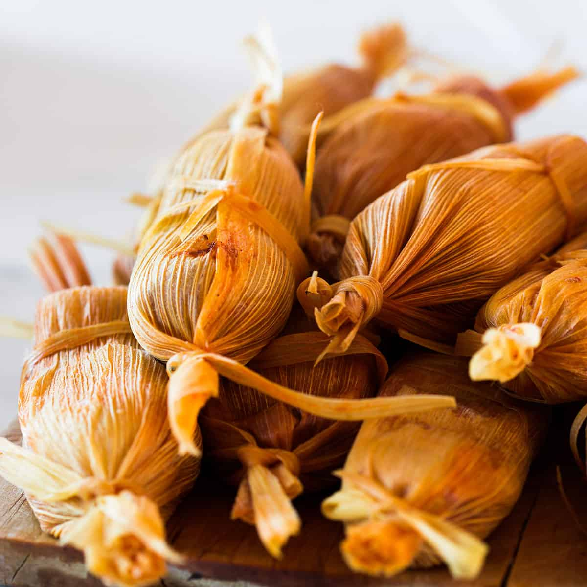
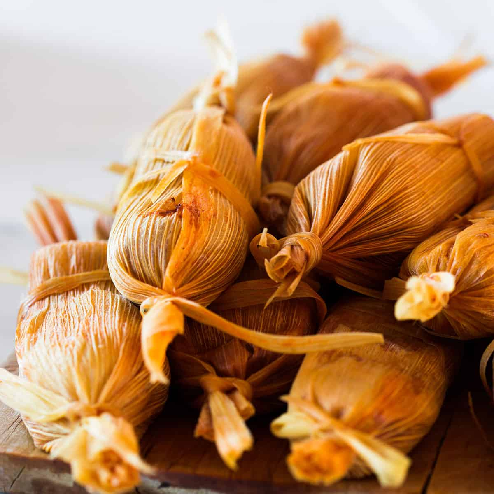

In Mesoamerica, tamales were the first dish to be made from corn. There is evidence that tamales were cooked as
early as 8000 BC in ancient civilizations. Many historians believe that tamales were first made ten-thousand years ago by the Aztecs, but are
still unsure whether it is actually true. In ancient civilizations, Aztec warriors used to take tamales into battle, tamales were rich in protein and very
portable. Hunters also used to take tamales with them during their hunts. Women would make the tamles, this process was part of their daily routine and their important
religious traditions. Tamales were originally cooked over hot ashes in a buried fire. Later, when Spanish conquistadors brought pots and pans,
women started steaming the corn-wrapped packages. The Spanish also introduced more flavors, adding meat and lard to the vegetable dish. By the 1870s,
tamales were brought from Mexico to the United States and were very popular in places such as Los Angeles. One historian believes that Mexican migrants brought tamales to
Mississippi when they came to pick cotton in the early 1900s. Another historian believes that tamales were brought by U.S soldiers returning from the U.S-Mexican war in 1848.
However, in the 1870s in Los Angeles you could find tamales in almost every food cart. They were considered such a nuisance that officials even tried to ban them. The same almost
happened in San Antonio, Texas. In Mississippi, tamales became very popular amongst the African American community, tamales even inspired jazz songs. Today, tamales are no longer
a daily or weekly dish, but are made for special occasions such as the Day of the Dead, Christmas, and New Year's because of the laber-intensive method required to make them.
Recipe
This recipe is for making tamales, you prepare the husks, you have to soften them by dipping them in water for a while. Then prepare the fillings, you can put beans, cheese, pork, or
chicken into the tamales,it is entirely your choice. After that you start to prepare the dough, you should make sure it feels like peanut butter in the end. Finally, you just assemble
the tamales, lay out a corn husk, spread some dough on it, then put the filling in the center on top of the dough, wrap up the husk, cook them in a pot on the stove-top for an hour or
two or until cooked through.
Ingredients
Masa Harina
Broth
Baking Powder
Salt
Cumin (A spice made from dried plant seeds)
Lard
Dried Corn Husks
A Filling Of Your Choice
Directions
Soak the corn husks. Place corn husks in a bowl with hot water for 30 minutes or until softened.
Prepare desired filling. You'll need about 3.5-4 cups of filling for one batch of tamale dough.
Some options include:
Salsa verde chicken: 3.5 cups cooked, shredded chicken mixed with 16 ounce can slasa verde
Bean and cheese: 15 ounce can refried beans and 1.5 cups shredded mozzarella cheese
Make the masa dough: In a large bowl, use an electric mixer to beat the lard and 2 tablespoons of broth until fluffy, about 3-5 minutes. Combine the masa flour, baking powder, salt, and cumin in a medium bowl; stir in the lard mixture and beat well with an electric mixture. Add the broth, little by little to form a very soft dough. Beat on high speed for several minutes. The dough should spread like creamy peanut butter and be slightly sticky. Cover the mixing bowl with a damp paper towel to keep the dough from drying out.
Assemble the tamales: Lay a corn husk, glossy side up, on the counter with the wide end at the top. Scoop about 0.25 cup of dough onto the top center of the corn husk. Lay a piece of plastic wrap over the dough and use your hands to press and spread the masa into a thin layer, about 0.25 inch thick. Keep the dough spread along the top half of the corn husk to allow plenty of room to fold the bottom husk up, when it's time.
Place 1-2 tablespoons of desired filling in a line down the center of the dough. (You don't want too much filling).
Fold-in one long side of the husk over the filling. Fold in the other long side, overlapping the first(like folding a brochure). Fold the bottom of the husk up. Optional: Tear a long strip from an edge of one of the soaked corn husks and use it to tie the tamale, to hold it together.
Tie the tamales(optional): Tying the tamales can help you differentiate them if making more than one filling. However, you don't have to tie a corn husk string aorund them to secure them, as they will hold together without it, stacked upright, side-by-side in the pot.
Cook on the Stove-Top or Instant Pot
Add water to the bottom of your stove-top steamer or Instant Pot pressure cooker. (About 1 cup for IP and a few cups for a steamer pot don't fill above the steamer rack.) Lay a few extra corn husks on the bottom rack to keep the tamales from falling through and any boiling water from directly touching them.
Place tamales standing upright, with the open end up, just tightly enough to keep them standing. If using a steamer, lay a few soaked corn husks or a wet towel over the top of the tamales before closing the lid.
Steamer: Bring water to a boil and once boiling, reduce to a simmer and steam for 1 to 2 hours (or even longer, depending on how many you're making) or until cooked through. Check them after 1 hour.
Instant Pot: Cook on Manual/High Pressure for 25 minutes. Allow pressure to naturally release for 10 minutes, and then quickly release.
 
